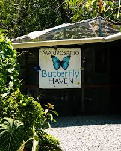
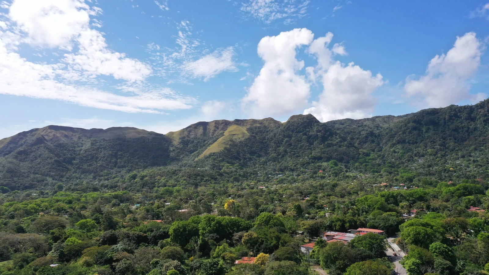
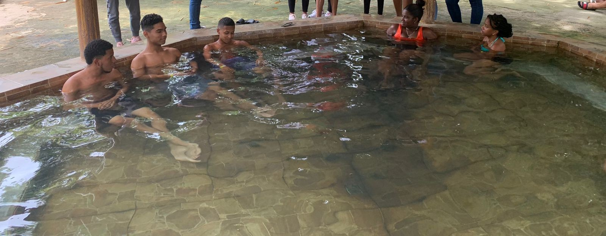

Historia
Visita El Valle de Antón, un pueblo pintoresco en medio del cráter de un volcán inactivo. Una tierra fértil, rica en biodiversidad y llena de aventuras sobre el lado verde de la Riviera Pacífica, en la provincia de Coclé.
El Valle de Antón es uno de los destinos más visitados de Panamá por su clima fresco, su naturaleza exuberante y su ambiente tranquilo. Está ubicado dentro del cráter de un antiguo volcán extinto, lo que lo convierte en un lugar único.
Escoge tu tour favorito
|
|
Puedes escoger entre varios tours para conocer El Valle de Antón, un destino único ubicado en el cráter de un antiguo volcán. Las opciones incluyen caminatas por la naturaleza, visitas a cascadas, aguas termales y el mercado local. Cada tour ofrece una forma distinta de disfrutar la belleza y cultura de este pintoresco lugar. |
|||
El Chorro Macho

|
Jardín Botánico

|
La India Dormida

|
Aguas Termales y Mercado de artesanías

|
|
Visita la página oficial del Autoridad de Turismo de Panamá